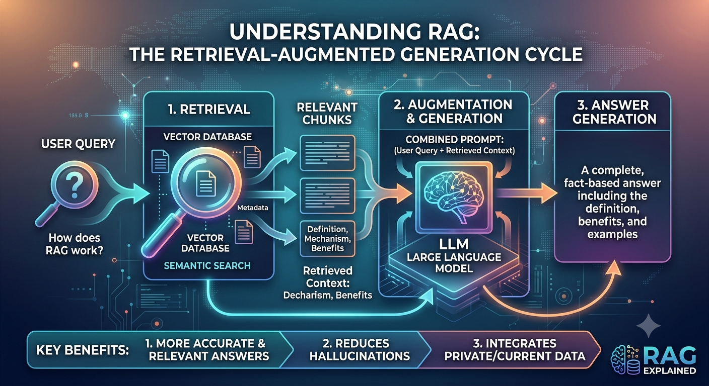

The Ultimate Guide to RAG Architecture

Imagine you are taking an open-book exam. Instead of trying to memorize every single fact in the world, you just look up the correct page in a textbook when a question pops up. That is exactly how Retrieval-Augmented Generation (RAG) works for AI.
The Big Problem with Standard AI
Normally, an AI model can only answer questions using the facts it learned while it was being built. This built-in memory is static. If you ask it about a private file inside your company, or a piece of news that happened an hour ago, it cannot know the answer. It will either tell you it doesn't know, or it will confidently make up a fake answer.
To fix this, we could try to retrain the whole AI on our new data, but that is a massive headache. It takes weeks, costs a fortune in computer power, and the moment your data changes, you have to do it all over again.
The Three Simple Steps Under the Hood
A RAG system works in three basic phases: Ingestion (prepping the files), Retrieval (finding the facts), and Generation (writing the answer).
First, we have to prepare our files so a computer can quickly search through them later. This happens in the background before anyone asks a question:
- Chunking: We take long files and cut them up into smaller, readable paragraphs. This makes sure the text blocks aren't too massive to hand over to the AI later.
- Embedding: We send each text block through a separate model that turns the sentences into a long list of numbers called a vector. This vector represents the hidden meaning of the words. For example, a paragraph about "puppy food" and a paragraph about "dog nutrition" will have very similar number patterns, even if they use different words.
- Vector Database: We save these lists of numbers into a special database, keeping them paired up with the original English text.
When a user types a question, the system springs into action to find the best match:
- Turning the Question into Numbers: The system takes the user's question and turns it into a list of numbers using the exact same model we used for our files. If you used a different model here, the math wouldn't align, and the database would get confused.
- Math Matching: The database compares the question's numbers against all the file numbers to find the top matches.
Let $E$ be our embedding model. The question $Q$ and our file chunks $D_i$ become vectors: $$ \vec{v}_q = E(Q), \quad \vec{v}_{d_i} = E(D_i) $$ We calculate the angle between these numbers to see how close they are in meaning. This is called cosine similarity: $$ \text{Similarity Score} = \frac{\vec{v}_q \cdot \vec{v}_{d_i}}{\|\vec{v}_q\| \|\vec{v}_{d_i}\|} $$
Let's say the system finds two paragraphs (Doc 1 and Doc 3) that match the question perfectly. The system turns those number patterns back into ordinary text and creates a hidden prompt template for the AI.
This is the actual text payload that gets sent to the AI behind the scenes:
The AI reads this whole note. Because it has the exact facts sitting right in front of it, it doesn't have to guess. It just writes a clean response using the text we provided:
"To log into the router, use the password 'BlueSky2026!'. You can find the physical hardware in the IT closet on the 3rd floor."
Real-World Challenges and Deep Architectural Fixes
Simple RAG setups work great for easy questions, but they often break down in real business environments. Let us look at the four biggest reasons they fail, with all the deep technical details explained in straightforward terms.
The Problem: In a basic RAG setup, documents are cut up blindly by counting characters, like making a cut exactly every 500 characters. This naturally splits critical sentences right in half. If the first half of a paragraph contains an important company rule and the second half contains the exception to that rule, splitting them destroys the core meaning. The numbers generated by the model drift away from the true intent, and the search engine ends up pulling completely useless fragments.
The Fix: Semantic Chunking and Parent-Child Retrievers.
- Semantic Chunking: Instead of blindly counting characters, the system reads the text intelligently. It only splits the document when the actual meaning changes, such as at paragraph breaks, markdown headers, or major shifts in the topic structure.
- Parent-Child Retrieval: The system cuts data into tiny slices called child chunks, around 100 tokens long, to get highly accurate search matches. However, when a child chunk is picked by the database, the system does not send that tiny fragment to the AI. Instead, it reaches back and pulls the larger parent document, like the full page or chapter surrounding it. This ensures the AI receives the complete, unbroken context.
The Problem: Matching numbers in a vector database is just a mathematical guess at meaning. Because of this, it is easily fooled by files that share the same vocabulary but mean different things. For example, if a user asks, "How do I prevent the machine from starting?", a basic vector database might pull a document titled "How to start the machine" because the words match up closely in number space. By doing this, it completely misses the negative intent of the word "prevent".
The Fix: Hybrid Search and Reranking.
- Hybrid Search: The system runs two entirely separate searches at the exact same time. It runs a vector search to find conceptual meaning, and an old-school keyword search, like BM25, looking for exact text matches, part numbers, or specific negative words like "prevent". The results are then combined cleanly using a blending algorithm called Reciprocal Rank Fusion.
- Reranking: The system grabs the top 20 or 30 documents from that combined hybrid search and passes them through a secondary, lightweight AI model called a Cross-Encoder Reranker, like Cohere Rerank or MiniLM. Unlike the fast vector database, this reranker slowly reads the user's question and the text chunk together to measure exact relevance. It sorts the absolute best answers to the top and throws away the remaining noise.
The Problem: If you pull the top 10 chunks from your database to ensure you do not miss anything, you fill up the AI's prompt with hundreds of lines of text. Large language models suffer from a structural flaw known as the "Lost in the Middle" effect. They pay heavy attention to information at the very beginning and the very end of their prompt, but they tend to completely ignore or forget details buried deep in the middle. On top of that, all this extra text clutter causes the model to lose track of facts and hallucinate.
The Fix: Context Compression and Positional Sorting.
- Context Compression: Before sending any retrieved text to the AI, a miniature helper model strips away fluff words, messy HTML tags, and repetitive text from the chunks. It leaves behind only the raw, information-dense sentences.
- Positional Re-sorting: The software intentionally rearranges the retrieved chunks before building the final prompt. It forces the most critical, highest-scoring documents to go directly to the absolute top and the absolute bottom of the text window, forcing the AI to read and process them with high accuracy.
The Problem: Vector search is flat and linear. It can easily answer a simple question like "What was our Q2 revenue?" or "What was our Q3 revenue?". But if you ask a complex reasoning question like, "Compare our Q2 and Q3 revenue growth and list the risk factors mentioned in both," a basic vector search collapses. It has no way to map out relationships or connect clues scattered across completely separate documents.
The Fix: GraphRAG and Agentic Loops.
- GraphRAG: Instead of just turning text chunks into independent floating lists of numbers, the data is mapped into a structured Knowledge Graph using database tools like Neo4j. It links actual entities together, creating paths like Company X reported Q2 Report which contains Risk Factors. The system can then walk along these mapped connections to gather deeply related data from different files.
- Agentic RAG: The simple step-by-step pipeline is turned into an active intelligence loop. The user query triggers an AI Agent to behave like a human researcher. It sits down and writes a manual plan, thinking along the lines of: first, I will look up Q2. Let me check what I found there. Okay, now I will run a separate query for Q3. Now I will explicitly ask the database for the risk factors in both. It gathers, critiques, and refines its data step-by-step before outputting the final answer.
Good Reads & Sources
- Lewis, P., et al. (2020). Retrieval-Augmented Generation for Knowledge-Intensive NLP Tasks. NeurIPS.
- Gao, Y., et al. (2023). Retrieval-Augmented Generation for Large Language Models: A Survey. arXiv:2312.10997.